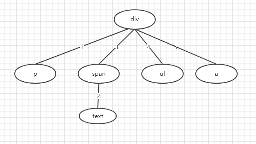
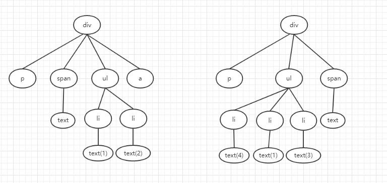
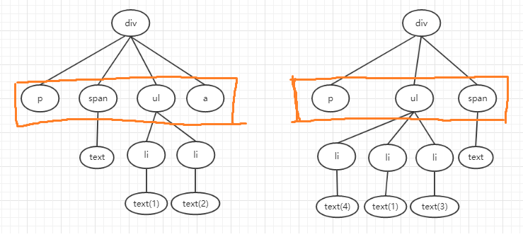
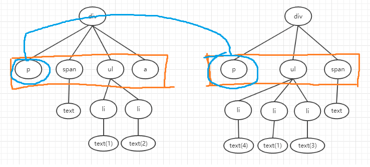
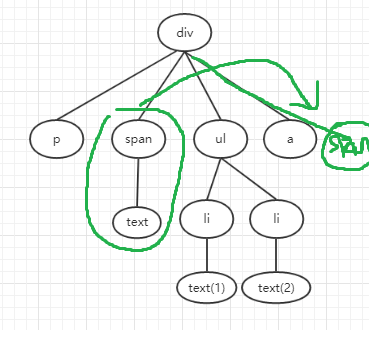
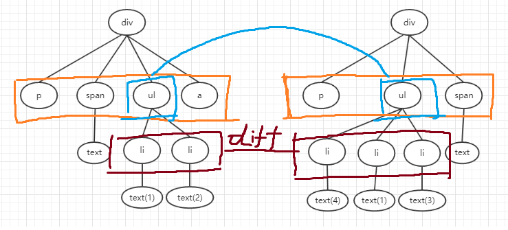
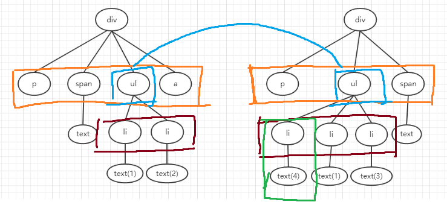

VDOM
为什么要有VDOM
一、DOM(Document Object Model)
什么是DOM？
在MDN上有这样的一段描述：
文档对象模型 (DOM) 是HTML和XML文档的编程接口。它提供了对文档的结构化的表述，并定义了一种方式可以使从程序中对该结构进行访问，从而改变文档的结构，样式和内容。DOM 将文档解析为一个由节点和对象（包含属性和方法的对象）组成的结构集合。简言之，它会将web页面和脚本或程序语言连接起来。
一个web页面是一个文档。这个文档可以在浏览器窗口或作为HTML源码显示出来。但上述两个情况中都是同一份文档。文档对象模型（DOM）提供了对同一份文档的另一种表现，存储和操作的方式。 DOM是web页面的完全的面向对象表述，它能够使用如 JavaScript等脚本语言进行修改。
DOM可以将文档解析成一棵由节点和对象组成的树。
就像这样：

我们可以通过DOM来修改我们所能在页面中可以看见的东西
Node和Element
Node表示任意的DOM对象包括（document，document.body，任意的标签，或者文本节点）
Element是Node中一个特殊的类型
二、没有VDOM
DOM的存在，可以让我们修改页面中的任何可以看见的东西，但是，这些修改都是人为的，比如：
1 | <p id="text"> |
当我们打算修改id为text P标签里面的内容时：我们得先从DOM中得到这个Element节点。
1 | var elm = document.getElementById('text') |
然后再进行修改。这样做导致了一个问题：
如果我们有一个list，内容比较多。那我们需要修改list中的某些item的内容怎么办？需要先检索一遍list，找出需要修改的Element，再进行修改。如果删除整个list然后重新create这个list呢？这样做浪费的时间当然比patch还大，createElement和removeElement都需要花费时间的。
举个例子:
旧的List
1 | <ul> |
新的List
1 | <ul> |
肉眼观察，我们需要修改ul中的第二个li。
但是在和后端的交互中，你无法预测出要修改第几个li，可能是第一个？也可能是第二个？所以这时候就需要search来找出你需要第几个。
可以这样：
1 | var oldList = [1, 2] |
这样就知道需要修改第几个li节点了。
但是如果结构复杂一点怎么办？而且，不仅仅是修改，还有添加和删除。
三、VDOM带来了什么
DOM是我们已经可以看得到的。如果需要检索一遍list，找出需要修改的Element，我们需要记录旧的信息，再通过新的信息和旧的信息去比较得到我们想要修改的Element。显然，我们不能直接记录旧的DOM，毫无意义，DOM是能实时给用户看的。我们需要另一个东西来还原出DOM的结构，通过新的NodeTree和旧的NodeTree之间的比较，来找出我们需要修改的Element，然后再进行patch。
这时候就有VDOM(virtualDOM)，虚拟的DOM节点，不是真实的DOM，反正怎么搞用户也看不到。
VDOM的结构和DOM基本一致，只是属性和方法不一样，VDOM只记录重要的信息，比如tag，props，children。而DOM里面就不止了，有一大堆方法。VDOM是DOM的精简版。
1 | { |
这样就可以还原出这个NodeTree
1 | var element = document.createElement('div') |
React的jsx
一、jsx是什么
在我 看来jsx就是个语法糖，让我们在js中写类html用的。方便开发。babel或者typescript都支持对jsx的编译。
Before:
1 | /** @jsx h */ |
After:
1 | var foo = h( |
二、jsx与VDOM
我们可以通过定义h函数，来得到一个VDOMtree，通过diff 新的VDOMtree和旧的VDOMtree来得到需要patch的Element，然后update到DOM上，来修改视图。
VDOM的关键部分
一、VDOMTree
我们通过定义hyperscript函数，通过他的返回值，来得到一个VDOMtree
1 | function h(type: string, props: props, ...children: Array<VNode>): VNode { |
Before:
1 | /** @jsx h */ |
After:
1 | { |
这样我们就可以得到一个VDOMtree了。
二、createNode(VDOM->DOM)
1.dfs的创建过程

图片上的是一棵树，Node的创建过程如树边上的序号所示。
代码如下：
1 | function createElm(vnode: VNode): Node { |
创建完element后，需要把实际DOM中的element存放在VDOMNode中的el属性中，方便后续对element进行操作。
2.添加node的props
创建的过程中对每个Node需要添加props。target的为HTMLElement因为Element才有setAttribute方法，Node是没有的，例如（textNode）
1 | function setProp(target: HTMLElement, attr: string, value: any) { |
3.flatten Array的用处
1 | function h(type: string, props: props, ...children: Array<VNode>): VNode { |
代码上children需要flatten，flatten函数的作用是将二维数组变成一维的。
JSX：
1 | <div> |
UnFlatten:
1 | { |
Flatten:
1 | { |
会发现，在flatten之前，div的children其实是[[1, 2, 3], 5]， flatten之后是[1, 2, 3, 5]。
因为map的返回值是一个数组，所以就会得到[[1, 2, 3], 5]这样的结果。
三、diffChildrenNodes
1.Diff算法
diff是通过一层一层来diff的，类似与bfs的过程，都是先拓展出所有子节点。
首先先来看一下2段关键代码
PatchChildren
1 | function patchChildren(newCh: Array<VNode>, oldCh: Array<VNode>, parentElm: Node) { |
PatchNode
1 | function patchNode(newVNode: VNode, oldVNode: VNode) { |
代码中都有注释。那么来看一个实例：根节点是samenode的情况。
OldNodes
1 | <div> |
NewNodes
1 | <div> |
这2个的VDOM树如图：

首先，这2个VDOM都会生成一棵VDOMTree都有一个root节点，都是div，我们调用patchNode(newNode, oldNode)来调整DOM

因为根节点是sameNode(标签相同且key相同//没有key)，并且都有children，就需要patchChildren
如图上橙色的，就是需要diff的子节点。Olds[p, span, ul, a], News[p, ul, span]

newStart: p oldStart: p 并且sameNode(newStart, oldStart): true 所以patch(newStart, oldStart) 在这一层中相对位置不需要变动。
newStart: ul oldStart: span , newEnd: span,oldEnd: a sameNode(newEnd, oldStart): true 所以先将整个子树patchpatch(newEnd, oldStart) 这时候需要在DOM中将 以oldStart为根的整棵子树移动到结尾， 如图。

将patch后的子树，移动到末尾，原来的子树会被删除，也就是说：insertBefore的操作是移动的。
newStart: ul oldStart: ul 所以不需要移动，但是他的子节点可能需要patch，所以：patchNode的时候需要patchChildren


key为4的element不存在，所以需要创建。
就循环patchNode, patchChildren……….
这里有一个要注意的地方，有一段代码：
1 | findIdxInOld(newStartNode, oldCh, oldStartIdx, oldEndIdx) |
####
最后
通过这个VDOM，了解了vue的diff算法，这个算法让我学习到了工程中的算法和ACM写的算法的差异。ACM求的都是最优解，但是工程中的算法需要考虑很多实际情况。
加key能提高VDOM的性能，并且key尽量不用index，应该使用一些更独特的信息。